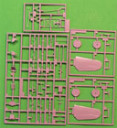

{kind=link}
{kind=link}
{kind=link}

{kind=link}
You may click on the small images above to view larger pictures
Hasegawa Aichi B7A2 Ryusei Kai (Shooting Star) Grace
Kit #9149
MSRP $29.95
Images and text Copyright © 2006 by Matt Swan
Developmental Background
In May 1942 a rather large prototype aircraft rolled out of the Aichi factory in Funakata that could have been the Japanese Navy’s counterpart to the US Avenger. Sporting a Nakajima Homare 11 radial engine that was very similar to the Pratt & Whitney R-2800 and driving an eleven foot diameter propeller this inverted gull wing bomber was destined to have very little impact on the war effort.
The Japanese Navy had issues specifications for an aircraft that was to replace the Jill and the Judy, the Grace or Shooting Star as designated by the Japanese, was the result of that effort. It was a large aircraft that needed the inverted gull wing to allow the large propeller to clear the flight deck and carried a good bomb load or torpedo. It had a good defensive position and had it ever entered service would have provided a rather tough opponent for the US Navy Hellcats and Wildcats. After the initial nine prototype aircraft had been built, tested and found to be well behaved machines with good handling characteristics two plants were established to begin production. The first plant was at the Aichi site in Funakata and the second at the Naval Air Arsenal at Omura. These plants were to produce the aircraft with the improved Homare 12 engine.
A series of events terminated these plans beginning with a large earthquake which destroyed the Funakata plant followed by the destruction of the Japanese Aircraft Carriers by the US Navy. Only about 105 production aircraft were ever completed and were restricted to operating from land bases. Most ended their short careers as kamikaze aircraft with only one example surviving to this day. That aircraft currently resides at the Smithsonian storage facility in Suitland Maryland.
The Kit
While it may seem odd that a main line model manufacture like Hasegawa would bother with producing such a little known aircraft as the Ryusei they certainly spared no effort in making it a fine production. This looks to be one of the finest pieces turned out by Hasegawa with nice crisp panel line detail, no visible flash and excellent parts fit. Upon opening the box we are greeted with thirteen sprues of parts done in a high pressure injection molding with a light gray, almost tan plastic complemented by a small sprue of clear parts and four poly caps.
Interior detail is very nice with a complete cockpit and very well detailed bomb bay. While the operational aircraft were intended to be fitted with either bombs or a torpedo we only get 250 pound bombs with this model. The canopy is provided as a five piece assembly so it can be modeled open or closed, Wing tip marker lights are also provided as clear parts to enhance to overall appearance of the model. Frame lines are well defined on the clear pieces and the panels display good clarity. During test fitting it was obvious that very little putty would be needed building this kit. Taking an inventory of the box we have one hundred twenty two plastic pieces, four poly caps and eleven clear parts for a total of one hundred thirty seven pieces in the box. Seven of those plastic pieces and three of the poly caps will not be used for this model.

You may click on the small images above to view larger pictures
Decals and Instructions
Kit instructions are presented as a standard size fold-out like we commonly expect from Hasegawa consisting of eight panels. The cover panel contains a copy of the box art along with two close-up views of the completed model and a historical background of the type in both Japanese and English. The next three panels are all devoted to assembly with eleven exploded view construction steps. There are plenty of color call-outs scattered throughout the assembly steps. The next panel contains a complete parts map along with a paint chart listing colors by Gunze Aqueous numbers, Mr. Color numbers and by color name. Two panels are set aside for decal placement instructions and exterior painting directions. The last panel is basic modeling safety guidelines.
The kit decal sheet only offers marking for two aircraft. I believe there was a second issue of this same kit that had three aircraft markings in it but mine has only two nearly identical aircraft both from the 752nd Air Corps. The decals are well done with overlaying hinomarus in red and dark green. Color density looks good and print registry is right on the mark. A decal is provided to use on the instrument panel and some propeller markings are included. For the most part there are no service stencils or warning markings included on the sheet.
Conclusions
This is easily one of the finest quality kits produced to date from Hasegawa, a fine example of the art of model production. It contains plenty of good detail, parts are well engineered with good fit and it appears to be dimensionally accurate. While a rare aircraft to have been seen in combat it was not totally unknown and if produced in quantity, and should there have been any aircraft carriers left to carry it, it would have been an impressive foe. As it was it turned out to be simply a small footnote in the chronicles of the war years.
There are not many items on the aftermarket for this model, Eduard does make a small photo etched fret to increase the detail level somewhat, Cutting Edge offers a mask set and Squadron stocks a replacement vacuform canopy should you care to go that way. Overall this is a very nice model and well worth having in your collection.


{kind=link}